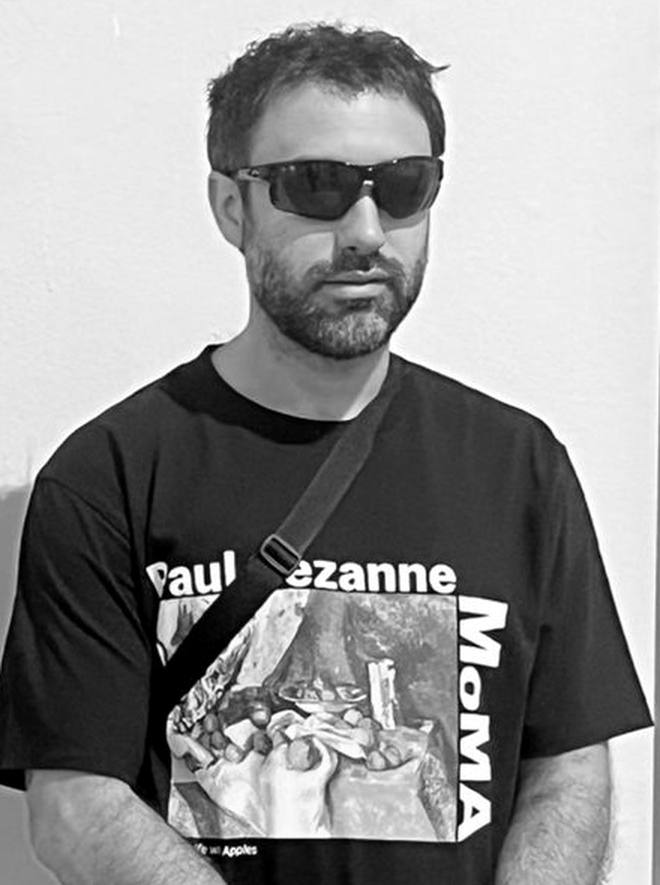

·:+++x=;+;;:
:x#@@%%@@@@@@@%#X:
;X@@@%##XX#%%#%%###%x
x@@@@#x=+: ::;; ::;=%%·
=@@@%x;;::· ;##
X%%@X;;;:· ;@
x%%#x=xx=x===;::;++=xx#
+xX#X#@@@@@@@@@%@@@@@%x
;==#x;#%@@@@@@#:#@@@@x
+=xX+;+=XX##=: Xx=;·
:xx==+;: +==+; ·
=xX=;;++X%%%X=+·+·
=###xX##X=+++X#xx
+%@@@%#XXXXx==%#
+=#@@@@#x==+;X=
:=;+===xX#%@@%####+
;x#@@=++====xxXX##Xx:=@#x+:
+X%@@@@@@#x==========+:+%@@@@@@#x;
:=#@@@@@@@@@@@@@%#Xx==xx+;X@@@@@%@@@@@@%X=:
·x%@@@@@@@@@@@@@@@@@@@@@@@@%@@@@@@@%@@@@@@@@@@@=
x@@@@@@@@@@@@@@@@@@@@@@@@@@%%%%@@@@@@@@@@@@@@%@@@#
;%@@@@@@@@@@@@@@@@@@@@@@@@@@%%%%@@@@@@@@@@@@@@@@@@@%X
:;;@@@@@@@@@@@@@@@@@@@@@@@@@@%%%%@@@@@@@@@@@@@@@@@@@@@%@x
=+X@@@@@@@@@@@@@@@@@@@@@@@@@%%%%@@@@@@@@@@@@@@@@@@@@@@@%@:
++@@@@@@@@@@@@@@@@@@@@@@@@%#%%%@@@@@@@@@@@@@@@@@@@@@@@@%@#
+=@@@@@@@@@@@@#X%%%%%x:@@%%%#x#x##X%XX%XX%##@@@%@@@@@@@%%@;
+x@@@@@@@@@@@@x;x ;;:;=@@@@#; + =· ::;::;; %@@@@@@@@@@@@%%
+#@@@@@@@@@@@@@X;:: +%@@@X ·++:;+::;;;:::·=;;+=%@@@@@@@%@=
+@@@@@@@@@@@@@@+ XXX@@@#; xx;:==+;·:::;::+ ·%@@@@@@@%%@
X@@@@@@@@@@@@@@+;@@@@%+:· =X=··+=+++=+++++=: X@@@@@@@@%%@# ·
@@@@@@@@@@@@@@@%%@@@X;=+ xx==;::=+· xxx=++= ;:X@@@@@@@@%@%@+ :
@@@@@@@@@@@@@@@@@@#+:=x::=Xx=+;;+:+= +=;;+=+:=@@@@@@@@@@@@%%@
@@@@@@@@@@@@@@@@%#::xXX%x=X==; ;:;x +X=+++= =@@@@@@@@@@%@@@@#:
@@@@@@@@@@@@@@@@;=+xXX; ;=:; · :+ :++;x+=· x@@@@@@@@@@@%#x=;
@@@@@@@@@@@@@@@@X;;;x= ·+X;· ·+ :;: :=x= #@@@@@@%Xx+= :
@@@%##%#%%%@@@@@#=#:· · : =;;; :· :·xx: +@@@%X=: : :
xXX=+;;;:···=%@@x+#X; ++ :+ +=:x%@@@Xx+:···; ;
+++x=+:;;;:: +%; +XX: :: +; x +@@#=+;· :+ ;
======+;;;;;: :;+;x#=:;:::····:;;·:: ;·;;X%@#=+;::·:;+ ;
+++====+++++;::· :+x%%XX#@@@@@@@@@@@@@@@@@@@@@@@%=;::: ::++ ;
+++++=x=====+;;::· ·+#@@@@@@@@@@@@@@@@@@@@@@@@@@X+;::··::+: ;

Alguien eligió cada tema.
Soy btlsm (beatalism). Junto discos, armo playlists y paso música en Córdoba.
Para tu local elijo qué suena según la hora, el lugar y la gente que va. Sin algoritmo.
- playlistsprogramación para tu bar o café, por franja horaria
- vinilosselección en vivo con discos de la batea
- dj setspara fechas y eventos